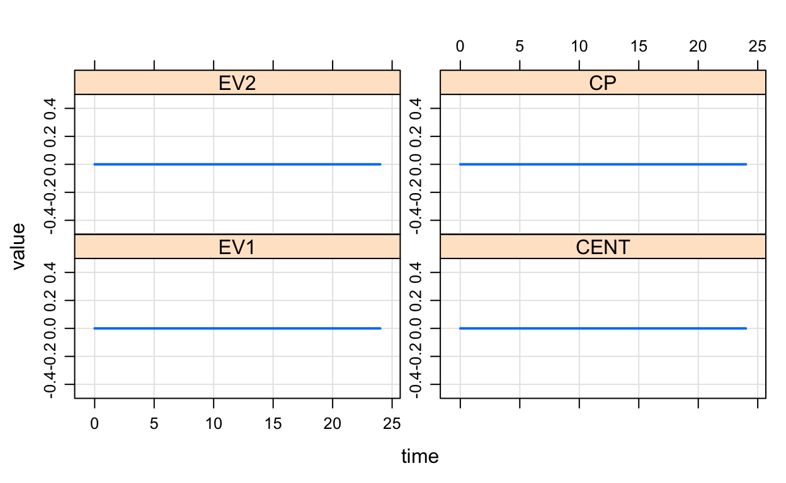
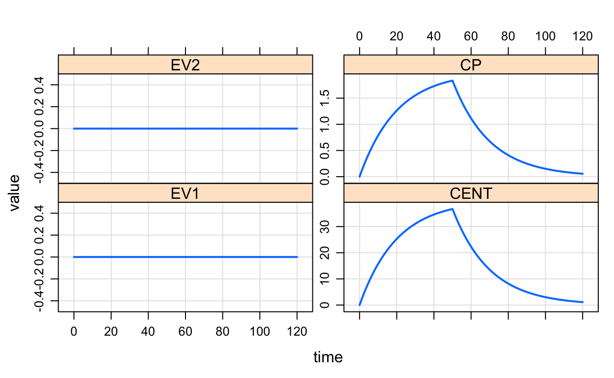
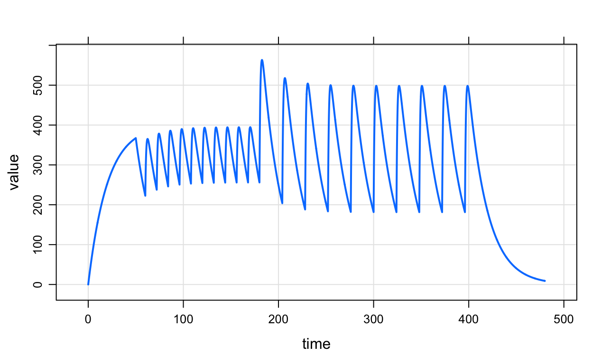
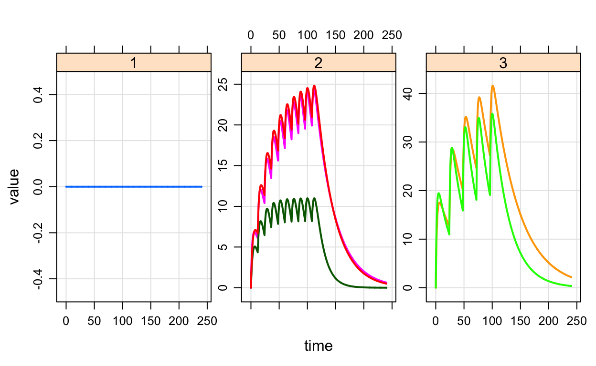

Introduction
This is a very short introduction to mrgsolve. We will cover the basics of loading and working with models in mrgsolve.
mrgsolve is an R package for simulation from hierarchical, ordinary differential equation (ODE) based models typically employed in drug development.
mrgsolve is distributed as a package for R and utilizes an ODE-solver from ODEPACK which is freely-available in the public domain. We develop mrgsolve on GitHub, with input and contributions from the pharmacometrics modeling and simulation community. We welcome feature requests and bug reports on the GitHub site issue tracker.
Links:
Load mrgsolve
library(mrgsolve)I usually work with these packages as well. Most of these will eventually be required to run the code in this tutorial.
library(dplyr)
library(magrittr)
library(tidyr)
options(mrgsolve_mread_quiet=TRUE)Here, I have also set an option so that mrgsolve doesn’t write any messages to the console when it is compiling a model.
A very simple PK model
Here is a PK model that is (almost) as simple as it gets: one compartment model with extravascular absorption:

Our goal in this lesson is to code up this model in mrgsolve format. As we work on this model, we’ll learn a little about the mrgsolve model specification format as well as learning a bit about how to load this model into the R session.
In the simple PK model, we see two compartments (GUT and CENT) as well as a handful of parameters (KA, CL, and VC) as well as another value computed from the CL and VC (ke).
One way to specify this model in mrgsolve format would be:
$PARAM CL = 1, VC = 20, KA = 1.2
$CMT GUT CENT
$ODE
dxdt_GUT = -KA*GUT;
dxdt_CENT = KA*GUT - (CL/VC)*CENT;In the model here we have a block to name and set values for parameters ($PARAM), a block to name compartments ($CMT) as well as a block to specify differential equations ($ODE).
We said this was one way to specify the model. We have written this PK model using differential equations, but we also could have asked mrgsolve to use algebraic equations to get the amounts in each compartment at each required time. More about that in a later lesson.
$PARAM - declare and initialize model parameters
$PARAM CL = 1, VC = 20, KA=1.2- Model “parameters” with
name=valueformat - Separate by
,or<newline> - Use any
nameexcept for words inmrgsolve:::reserved() - Values are evaluated by
Rparser - Multiple blocks allowed
- Use
nameanywhere in the model - Updatable in
Rbut read-only in the model specification file- Consider
$FIXEDif appropriate
- Consider
- Most often, you will want to match names in
$PARAMwith the names in your input data sets
$CMT declare model compartments
- Specify name and number of compartments in the model
- Use any name except for those listed in
mrgsolve:::reserved() - See also or
$INIT
Example $CMT
$CMT GUT CENTExample $INIT
$INIT GUT = 0, CENT = 10$ODE write differential equations
- Every compartment needs an equation
- Form:
dxdt_CMT = ratein - rateout; - Use
CMTfor compartment amounts, parameters, or other variables - This block of code gets called repeatedly so be wise
$ODE
dxdt_GUT = -KA*GUT;
dxdt_CENT = KA*GUT - (CL/VC)*CENT;Read and Load a Model
Use mread() to read a model from a file
mod <- mread("simplepk", proj)<model-name>,<project-directory>mrgsolveassumes there is a file calledmymodel.cppin directoryproj- Parse, write
.cppfile, compile, and load the shared object - Returns a model object (class
mrgmod)- Contains all of the basic information
mrgsolveneeds to run the model
- Contains all of the basic information
Use mcode() to write a model inline
code <- '
$PARAM CL = 1, VC = 20, KA = 1.2
$CMT GUT CENT
$ODE
dxdt_GUT = -KA*GUT;
dxdt_CENT = KA*GUT - (CL/VC)*CENT;
'mod <- mcode("mycode", code)mrgsolvewritescodeundertempdir(), then reads it back in
mread versus mcode
For project work, we highly recommend keeping your model in a separate .cpp file and loading it via mread. In the long run, this will maximize re-use of the model and it’s probably what you want for large project work.
That said, we recognize the convenience of calling mcode on your “inline” model. And we do it frequently in this tutorial because it makes things easier to follow.
mread_cache() and mcode_cache()
- Wrappers around
mread()andmcode() - Model is cached; unless invalidated, won’t need to recompile next time
- See
solocargument; this basically let’s you build the model in the location of your choosing
Set project to modlib() for internal library
modlib()returns a models directory wheremrgsolveis installed- Common, generic PK and PK/PD models
- Some specialized models
mod <- mread("pk1cmt", modlib())To see a listing of models in the library
?modlib
modlib(list=TRUE)Model overview
Run the following code and see what happens:
mod <- mread("pk2cmt", modlib())
mod
param(mod)
init(mod)In the example, we see the following:
- Just printing the model object to the
Rconsole will give you a basic picture of what is involved in the model - You can see names and values of model parameters using
param() - You can see names and values of model compartments using
init()- Note also, that
init()shows you the compartment numbers (in parentheses) which will be useful when choosing which compartment to dose into
- Note also, that
mod <- mread("pk2cmt", modlib())
class(mod)
see(mod)
stime(mod)
as.list(mod)Now, you try it out: Load the model irm1 from the internal model library and see what is in there:
mod <- mread()mod <- mread("irm1", modlib())
param(mod)
init(mod)
see(mod)Simulate from the model
mod <- mread_cache("pk1cmt",modlib())
mod %>% mrgsim. Model: pk1cmt.cpp
. Dim: 25 x 6
. Time: 0 to 24
. ID: 1
. ID time EV1 CENT EV2 CP
. [1,] 1 0 0 0 0 0
. [2,] 1 1 0 0 0 0
. [3,] 1 2 0 0 0 0
. [4,] 1 3 0 0 0 0
. [5,] 1 4 0 0 0 0
. [6,] 1 5 0 0 0 0
. [7,] 1 6 0 0 0 0
. [8,] 1 7 0 0 0 0The output from mrgsim is an S4 object with some information tucked away there, but the bulk of the data is a data frame of simulated values.
You can see in the previous example, that you always get an ID column as well as the simulated time. Then, by default, mrgsolve gives you all the compartments at every simulated time as well as all derived variables marked to be captured in the output. There are ways to control what appears in the output (mostly to limit what this or that simulation returns) that we will discuss later.
There is a plot method to quickly visualize results
mod %>% mrgsim() %>% plot()
Simulate with an event object
The last simulations were a real let-down: nothing happened. We can easily throw a drug dosing scenario at the model through an event object like this:
out <-
mod %>%
ev(amt=100,rate=100/50,cmt=2) %>%
mrgsim(end=120)
plot(out)
Here we had an infusion lasting 50 hours into the central compartment. The event object was created when we passed mod into the ev function and specified things like dose amount, infusion rate and the compartment where the dose is to be administered.
What to include in ev
IDsubject ID (you can use multiple ids …ID=1:10timethe time when the event is supposed to happencmtthe event compartment (usually where is the dose administered)amtthe dose amountiiinter-dose intervaladdladditional doses to administerrateuse non-zero rate to give an infusion; also can userate=-1orrate=-2to follow NONMEM behaviorssset to 1 to advance the system to steady stateevidevent id (1 = dose is what you use most of the time)
Available interventions and corresponding evid
- Bolus dosing (
evid1, withrate==0) - Zero order infusion (
evid1, withrate> 0) - Other type event (
evid2)- This also forces solver reset
- Compartment reset (
evid3) - Reset and dose (
evid4) - Replace the amount in a specific compartment (
evid8)
Try it out
Create simulations using ev objects
- 250 mg PO x1
- 250 mg PO every 8 hours for 3 doses as IV bolus
- 1000 mg IV infusion over 6 hours into the GUT compartment
mod <- mread_cache("pk1cmt", modlib()) %>% update(delta=0.1,end=72)mod <- mread_cache("pk1cmt", modlib()) %>% update(delta=0.1,end=72)
mod %>% ev(amt=250) %>% mrgsim %>% plot
mod %>% ev(amt=250, ii=8, addl=3, cmt=2) %>% mrgsim %>% plot
mod %>% ev(amt=1000, rate = 1000/6) %>% mrgsim %>% plotCreate complex dosing interventions
e1 <- ev(amt=1000, rate=20, ii=60, addl=0, cmt=2)
e2 <- ev(amt=200, ii=12, addl=9)
e3 <- ev(amt=400, ii=24, addl=9)
e <- e1 %then% e2 %then% e3
e. Events:
. time cmt amt rate ii addl evid
. 1 0 2 1000 20 60 0 1
. 2 60 1 200 0 12 9 1
. 3 180 1 400 0 24 9 1We used the %then% operator to start one series of events whenever the previous series of events ended.
out <- mod %>% ev(e) %>% mrgsim(end=480,delta=0.1)
plot(out, CENT~.)
There are several different ways to combine event objects together.
Simulate from a data set
The event objects we were using earlier were really simple data frames that had one dosing event in each row of the data frame. This mechanism is provided as a convenience to allow you to quickly put a series of events into action.
Data sets are a similar idea, but you have more flexibility and power to create complicated simulations.
There are several example data sets that come with mrgsolve
?exdatasetsWe will use one of them here
data(extran1)
head(extran1)Like the event object, the data set has columns for dose amt, dose time etc.
You can simulate from this data set using the data_set function
mod %>% data_set(extran1) %>%
mrgsim(end=168,delta=0.1) %>% plot
So the big difference here is that data sets allow us to simulate from a population, where everyone might have different dosing regimens.
Remember that data sets are just R data frames … nothing special or fancy about them except for their column names.
Rules for data_set
- An
Rdata.frame - Columns in any order
- All numeric;
character,factor,logicalare dropped with warning - No missing values except in unused columns
- Required:
ID,time,cmt - Either upper or lower case:
time,amt,cmt,ii,addl,rate,ssTIME,AMT,CMT,II,ADDL,RATE,SS
- Columns with same name as
$PARAMwill be used to update during simulation
expand.ev helps to quickly create data sets
data <- expand.ev(ID=1:4, amt=c(200,400), WT=80)
dataexpand.ev() does “all combinations” of the input (like expand.grid). Also, notice that by definition each ID can have only one row in the data set
as_data_set helps to quickly create multi-arm trials
e1 <- ev(ID=1, amt=0, ii=24, addl=4, arm=1)
e2 <- ev(ID=1:3, amt=200, ii=12, addl=9, arm=2)
e3 <- ev(ID=1:2, amt=400, ii=24, addl=4, arm=3)
data <- as_data_set(e1,e2,e3)
dataand simulate from this data set
mod <- mread_cache("popex", modlib())
mod %>% data_set(data) %>%
carry_out(arm) %>%
mrgsim(end=240,delta=0.1) %>% plot(DV~time|factor(arm))
Try it out
Using this starting code, can you modify the
exTheophdata set to do a 5-hour IV infusion?Try dropping the observation records (
evid==0) out of the data set and then simulate again
mod <- mread_cache("pk1cmt",modlib())
data(exTheoph)
head(exTheoph)
mod %>% data_set(exTheoph) %>% mrgsim %>% plotmod <- mread_cache("pk1cmt",modlib())
data(exTheoph)
df <- exTheoph %>% mutate(cmt=2,rate = amt/5)
mod %>% data_set(df) %>% mrgsim(delta=0.1, obsaug=TRUE) %>% plot(CP~.)